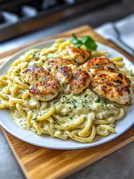

Return to Main Page
Creamy Garlic Chicken Pasta
Creamy Garlic Chiecken Pasta is a comforting and flavorful dish that combines tender, pan-seared chicken with a rich garlic-infused cream sauce. Tossed with perfectly cooked pasta and finished with parmesan cheese and fresh herbs, this recipe is perfect for a cozy dinner or an impressive meal for guests. It balances savory, creamy, and slightly tangy flavors in every bite.

Ingredients
- 2 boneless, skinless chicken breasts
- 250g (8 oz) pasta (fettuccine or penne)
- 3 cloves garlic, minced
- 1 cup heavy cream
- 1/2 cup grated parmesan cheese
- 2 tablespoons butter
- 1 tablespoon olive oil
- Salt and pepper to taste
- 1 teaspoon Italian seasoning
- Fresh parsley (chopped, for garnish)
Instructions
- Cook the pasta according to package instructions. Drain and set aside.
- Season the chicken breasts with salt, pepper, and Italian seasoning.
- Heat olive oil in a pan over medium heat and cook the chicken until golden and fully cooked. Remove and slice.
- In the same pan, melt butter and sauté garlic until fragrant (about 1 minute).
- Pour in the heavy cream and bring to a gentle simmer.
- Add parmesan cheese and stir until the sauce thickens.
- Return the chicken to the pan and mix well.
- Add the cooked pasta and toss until evenly coated.
- Garnish with fresh parsley and serve warm.